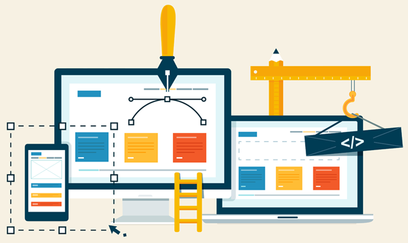
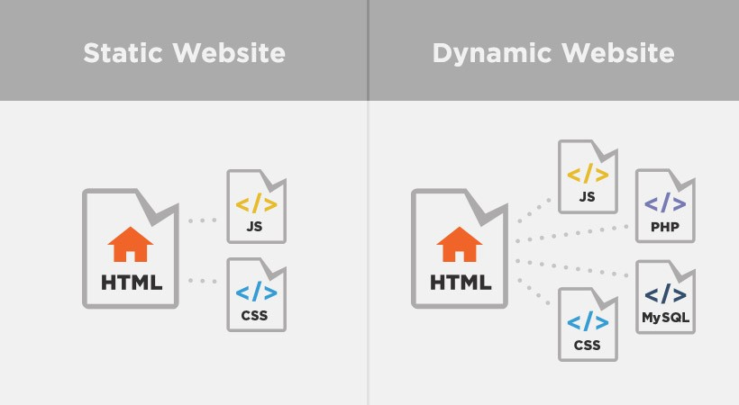

Izrada sajta - dizajn web sajtova
Izrada sajta - kako izgleda proces dizajniranja web sajtova?
- Pregled, procena i analiza zahteva klijenta
- Izrada specifikacije web sajta - raspored, navigacija sajtom, dinamički delovi internet sajta
- Programiranje, Web dizajn i izrada sajta - u ovoj fazi nam dostavljate sav pisani materijal i grafiku koju želite na sajtu, a mi razvijamo statičke i dinamičke delove sajta
- Testiranje sajta koji smo kreirali - ova faza podrazumeva brižljivo testiranje brzine i odziva izrađenog sajta, ispravljanje eventualnih grešaka u dizajnu i sl.
- SEO optimizacija i promocija sajta - faza u kojoj upotrebom niza tehnika i alata radimo na što boljem pozicioniranju sajta u pretraživačima poput Google i Bing
Izrada sajta - detalji
Izrada sajta je neophodnost u današnje vreme. Razvoj interneta i telekomunikacija su uticali na privredu svuda u svetu. Prisustvo na internetu danas je postalo jedan od glavnih faktora uspeha na tržištu, bez obzira da li je u pitanju velika kompanija, malo ili srednje preduzeće. Ulaganjem u izradu sajta, više niste ograničeni na mesto i zemlju gde živite i poslujete - Vaša firma lako postaje dostupna bilo gde na svetu.
Web sajt je ogledalo firme i može mu pristupiti svako ko ima internet, bez obzira na udaljenost ili radno vreme.
Za izradu sajta potrebno je poznavati principe dizajna, psihologije kupca i marketinga. Kvalitetan web sajt podrazumeva pre svega kreiranje sajta koji ima responzivan dizajn - web sajt mora biti dizajniran tako da se prilagođava svakom uređaju - od desktop računara sve do modernih telefona uz pomoć kojih ljudi u današnje vreme najčešće i surfuju internetom.
Vaš web sajt može da uštedi Vaše vreme, jer ostvaruje kontakte sa kupcima 00-24h, a Vama omogućava da se posvetite drugim važnijim poslovima.
Izrada sajta ne može biti kvalitetna ukoliko se sajt sporo učitava - posetioci će napustiti Vašu web stranicu ako predugo čekaju na otvaranje stranica.
Izrada sajta - ključni kriterijumi
Da bi web sajt bio kvalitetan i uspešan mora da zadovolji tri najvažnija kriterijuma: dizajn, sadržaj, navigacija.
Dizajn je slika Vaše firme na internetu. Kvalitetno kreiran web portal poboljšava imidž Vaše kompanije, te zato morate biti oprezni kada je u pitanju izbor kome poveriti dizajniranje web sajta. Postoji dosta elemenata koje treba uskladiti prilikom kreiranja Vašeg sajta: izbor tehnologija koje će se koristiti za izradu, tekstualni sadržaj, fotografije, animacije itd.
Sadržaj je razlog dolaska posetilaca na Vaš web sajt. Sadržaj je bitan iz razloga što se ceo internet sastoji iz mnoštva informacija koje sajtovi nude korisnicima interneta a do kojih oni stižu uz pomoć pretraživača. Način na koji je napisan sadržaj može da utiče na uspeh sajta. U zavisnosti da li je sadržaj dovoljno kvalitetan ili ne zavisiće i rangiranje Vašeg sajta na pretraživačima, a time i broj poseta web sajtu. Dobar sadržaj animira kupce i podstiče ih na akciju.
Navigacija je takođe važan aspekt koji je potrebno dobro da razmotrite kada dizajnirate web sajt. Elementi izrađenog sajta kao sto su glavni sadržaj, navigacioni meni, header, footer i ostali, treba da imaju logičan raspored. Na sajtu treba da se podjednako lako snalaze onaj ko je izradio sajt i onaj koji je slučajno nabasao na internet sajt preko rezultata pretrage.
Veoma je bitno i da se odlučite za CMS sistem - najpopularniji je svakako Wordpress. Šta je CMS? U najkraćim crtama, CMS predstavlja softver uz pomoć kojeg se, bez poznavanja programiranja, može upravljati sadržajem. Dakle, možete samostalno vršiti administraciju sajta - ukoliko to želite. Druga opcija je da koristite našu uslugu - Održavanje sajta.
Web dizajn i izrada sajtova - osnovni pojmovi
Šta je web sajt?
Web sajt je zbirka povezanih veb stranica, obično identifikovana zajedničkim nazivom domena, i objavljena na barem jednom web serveru. Web stranica obično je dostupna preko javne mreže poput interneta ili preko privatne lokalne mreže (LAN), i poziva se na jedinstveni lokator - URL koji identifikuje web stranicu.
Web sajt može biti lična veb stranica, komercijalna - kompanijska veb prezentacija, web stranica vlade ili neprofitne organizacije. Veb lokacije su po pravilu posvećene određenoj temi ili svrsi, od kupovine raznovrsnih artikala do pružanja informacija. Sve javno dostupne web stranice zbirno predstavljaju World Wide Web (WWW), dok privatne web stranice, kao što je interni web sajt kompanije, najčešće predstavljaju deo intranet mreže.
Web stranice, koje su "gradivno tkivo" web lokacija, su dokumenti, obično sastavljeni u jednostavnom tekstu uparenom sa HTML. Web stranicama se pristupa preko HTTP-a, koji opciono može da koristi šifriranje (HTTP Secure, HTTPS) kako bi obezbedio sigurnost i privatnost za korisnika. Korisnička aplikacija - često veb pretraživač, prikazuje sadržaj web sajta prema uputstvima za označavanje HTML-a.
Početna stranica uglavnom sadrži direktorijum web sajta. Neki web sajtovi zahtevaju registraciju korisnika ili pretplatu na sadržaj za pristup. Primeri pretplatnih sajtova uključuju mnoge poslovne sajtove, web stranice vesti, web stranice akademskih časopisa, sajtove za igre, web lokacije za razmenu fajlova (datoteka), oglasne table, elektronsku poštu, web stranice za društvene mreže, stranice koje obezbeđuju podatke o berzama u realnom vremenu.
Korisnici mogu pristupiti veb sajtovima na nizu uređaja, uključujući desktop i laptop računare, tablet računare, pametne telefone i pametne televizore.
Šta je web dizajn?

Web dizajn obuhvata mnoge različite veštine i discipline u proizvodnji i održavanju veb sajtova.
Različite oblasti web dizajna uključuju grafički dizajn, dizajn interfejsa, autorstvo, uključujući standardizovani kod i vlasnički softver, dizajn korisničkog iskustva i optimizaciju pretraživača. Izraz "web dizajn" obično se koristi da opiše proces koji se odnosi na dizajn - izradu web sajtova na klijentskoj strani.
Statički i dinamički sajtovi
Statički sajt
Statički web sajt čuva jedinstvenu datoteku za svaku stranicu statičkog sajta. Svaki put kada se traži određena web stranica, isti sadržaj se vraća. Ovaj sadržaj se kreira jednom, i to prilikom dizajna web sajta.
Prednosti izrade statičkog sajta su da su jednostavniji za hostovanje, jer je njihov server potreban samo za pružanje statičkog sadržaja, a ne i za izvršavanje serverske skripte. Ovo zahteva manje poslova vezanih za administraciju servera i manje su šanse da budu izložene sigurnosne rupe. Takođe je brže serviranje web stranica na slabijem serverskom hardveru. Ova prednost postala je manje važna u današnje vreme, pošto je jeftini web hosting proširen tako da nudi dinamičke karakteristike, a virtuelni serveri nude visoke performanse uz niske troškove.
Gotovo svi web sajtovi imaju neki statički sadržaj, jer su npr. slike i stilovi obično statični, pa čak i na web sajtu izrađenom sa vrlo dinamičnim stranicama.
Dinamički sajt
Dinamički web sajtovi se generišu u "letu" i koriste serversku tehnologiju za generisanje web stranica. Oni najčešće preuzimaju sadržaj iz baze podataka.
Proces dizajniranja web sajta dinamičkog tipa je sveobuhvatniji i komplikovaniji od izrade statičkog sajta. Skup znanja neophodnih za razvoj dinamičkih web sajtova je mnogo širi nego za statičke web stranice i uključuje programiranje na serveru i komunikaciju sa bazom podataka, kao i dizajn interfejsa na strani klijenta. Čak i dinamički projekti srednjeg obima su skoro uvek timski napori.